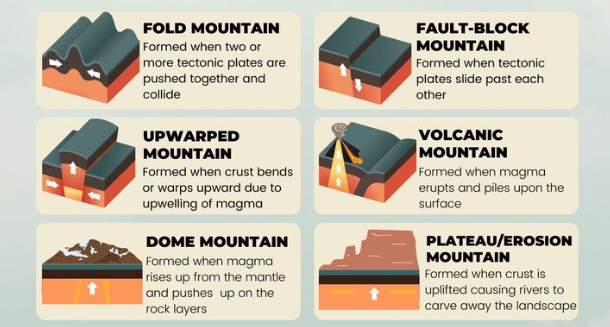

Geographical Features In Japan
Made by Zac Cooper & Will Poles
Japan is one of many places that have a substantially higher count of earthquakes and natural disaster occurrences, some of which include, volcanic eruptions, earthquakes, Tsunami’s and landslides. The most recent disaster being an earthquake, with a magnitude of 7.4 (on the Richter scale), this earthquake had caused disruptions within the train lines and had caused blackouts in the larger part of Tokyo, it had also caused a raging Tsunami with had killed over 500 civilians. The severity of the raging disasters in Japan is astronomical. Japan is part of the “ring of fire” which is a seismic hotspot (contains a lot of tectonic plates) and plays a big part on why Japan’s natural disasters are so severe. These earthquakes are either measured on the Ritcher scale, or Japan’s “Shindo” Scale.
Mountains In Japan
Japan is a very mountainous landscape, with over 80% of the inhabitable land being made up of mountains!
There are many different types of mountains in Japan such as: Fold Mountains, Fault Block mountains, dome mountains and plateau mountains.


One of the most famous examples of a fold mountain in Japan is: Mount Norikura a mountain, being formed by volcanic activity or by a converging plate boundary (constructive). A famous example of a fault block mountain is mount Mimuro, formed by a diverging plate boundary (destructive). A mountain that was formed by a transform plate boundary was Hidaka Mountain!
The significance of mountains in human society is unprecedented and can provide agriculture, food, hydroelectricity (if there is a waterfall) and shelter.
Mountains also contribute to biodiversity and ecological balance by providing shelter, fertile soil for endangered, small creatures and providing a fresh drinking source away from human intervention.
Tectonic Plates In Japan

Techtonic plates are large chunks of land, floating ontop of magma.
They world is covered in them! Tectonic plates move very slowly, and push or pull on eachother, allowing incredible landforms to form.
2 tectonic plates colliding can create a stunning mountain, or if they pull apart you can have a deep canyon.
Surprisingly, Japan is in the middle of 4 tectonic plates, being the north American, Philippine, Pacific and Eurasian plate. This makes Japan one of the most tectonically active place in the world!
One plate boundary that we will be looking at is the Eurasian plate and North American plate.
they have a divergent plate boundary, meaning that they pull away from eachother.
These 2 plates have created a lot of main features in Japans geography, most notably being the famous Mount fuji, a popular tourist destination and the tallest mountain in Japan
(sitting at 3,776 meters).

Earthquakes In Japan

Earthquakes are movements of tectonic plates (link) that collide or pull away from eachother with enough force to shake the entire plate. Earthquakes can be caused from humans moving a lot of stuff, A plate colliding and moving below another, or a volcanic eruption. Earthquakes are measured on the Richter scale, an easy way of determining the severity of an earthquake.
Japan however uses their own “shindo scale”, which goes from 1 – 7.
Japan makes their school students do a “Earthquake Drill” once a month to help prepare them for this kind of situation. On top of that, they use certain materials in their building process and certain strategies to help make buildings more suitable for major earthquakes. Finally, Japan has ways of being able to predict an earthquake, to help prepare their citizens for potential consequences.

Volcanoes In Japan

Volcanos are large mountains, however they are often filled with magma. Volcanos can easily be classified in 3 different types. Cindercone volcanoes are the most common, and a formed by large eruptions from a single (usually cyndrical) vent. Composite volcanoes are volcanoes that are built up from erupted material. Shield volcanoes are flat volcanoes that don’t erupt often.

Earthquakes are movements of tectonic plates (link) that collide or pull away from eachother with enough force to shake the entire plate. Earthquakes can be caused from humans moving a lot of stuff, A plate colliding and moving below another, or a volcanic eruption. Earthquakes are measured on the Richter scale, an easy way of determining the severity of an earthquake.
Japan however uses their own “shindo scale”, which goes from 1 – 7.
Landslides In Japan

Landslides are the collapse of mass after the rock and rubble had become loose, causing the rocks to fall down the usually steep mountain. Causes of these landslides can vary, some being caused by mining operations, some being caused by constant weight, some being caused by rain etc.. There are three main types of landslides. Creep landslides are the slowest and least deadly of all the landslides as it requires the gradual movement of debris down a soft slope. Mudslides are the movement of mud usually down a steep slope/mountain, this is usually caused by rain and is one of the deadliest of all landslides. Avalanches are the movement of snow down a steep slope these are usually caused by the constant weight and pressure being applied to the snow (usually by snowboarders).
The impacts of land slides In Japan are quite severe such as the Atami landslide, a landslide that had occurred in the Atami hot-spring resort which had killed approximately 30 people a landslide that was caused by heavy rainfall. Landslides can also cause a lot of property damage as most buildings/apartments in Japan/Tokyo are bunched together, so one landslide could take out 100 homes for people a famous example of this is the Atami landslide which had taken many buildings down. Another impact of landslides are the ruining of farm land destroying many crops and flooding the soil.
Bibliography
All images can be clicked on to bring you to the original location.
Mount Fuji - britannica
Causes Of Earthquakes - BYJUS
Richter Scale - britannica
Japanese Shindo Scale - Tips for tokyo life
Types Of Volcanoes - National Park Service
2011 Earthquake and Tsunami - Britannica
Japan Early Earthquake Warning System - Japan meteorological agency
All Remaining Details Are Learned In Class
All Code To This Website Can Be Located On Zac's Github Page.